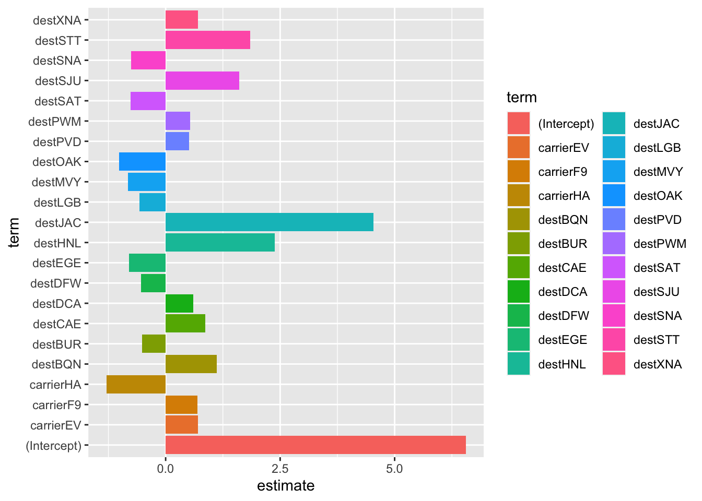

Load clean datasets
library(tidyverse)
## ── Attaching core tidyverse packages ──────────────────────── tidyverse 2.0.0 ──
## ✔ dplyr 1.1.3 ✔ readr 2.1.4
## ✔ forcats 1.0.0 ✔ stringr 1.5.0
## ✔ ggplot2 3.4.4 ✔ tibble 3.2.1
## ✔ lubridate 1.9.3 ✔ tidyr 1.3.0
## ✔ purrr 1.0.2
## ── Conflicts ────────────────────────────────────────── tidyverse_conflicts() ──
## ✖ dplyr::filter() masks stats::filter()
## ✖ dplyr::lag() masks stats::lag()
## ℹ Use the conflicted package (<http://conflicted.r-lib.org/>) to force all conflicts to become errors
library(tidymodels)
## ── Attaching packages ────────────────────────────────────── tidymodels 1.1.1 ──
## ✔ broom 1.0.5 ✔ rsample 1.2.0
## ✔ dials 1.2.0 ✔ tune 1.1.2
## ✔ infer 1.0.5 ✔ workflows 1.1.3
## ✔ modeldata 1.2.0 ✔ workflowsets 1.0.1
## ✔ parsnip 1.1.1 ✔ yardstick 1.2.0
## ✔ recipes 1.0.8
## ── Conflicts ───────────────────────────────────────── tidymodels_conflicts() ──
## ✖ scales::discard() masks purrr::discard()
## ✖ dplyr::filter() masks stats::filter()
## ✖ recipes::fixed() masks stringr::fixed()
## ✖ dplyr::lag() masks stats::lag()
## ✖ yardstick::spec() masks readr::spec()
## ✖ recipes::step() masks stats::step()
## • Learn how to get started at https://www.tidymodels.org/start/
library(yardstick)
library(MASS)
##
## Attaching package: 'MASS'
##
## The following object is masked from 'package:dplyr':
##
## select
df_2013_raw = read_csv("data/merge_data_2013.csv", show_col_types = FALSE)
## New names:
## • `` -> `...1`
df_2017_raw = read_csv("data/merge_data_2017.csv", show_col_types = FALSE)
## New names:
## • `` -> `...1`
df_2013_raw = df_2013_raw |>
mutate(if_delay = if_else(arr_delay >0,1,0),
if_delay = factor(if_delay),
#carrier_bin = if_else(!(carrier %in% c('UA','EV','DL','B6')),'Others',carrier),
#month = factor(month,levels = 1:12, labels = month.abb[1:12]),
arrival_date = paste(year,"-",month,"-",day, sep = ""),
arrival_date = date(arrival_date)
) |>
filter(!(dest %in% setdiff(unique(df_2013_raw$dest),unique(df_2017_raw$dest))),
!(carrier %in% setdiff(unique(df_2013_raw$carrier),unique(df_2017_raw$carrier))))
df_2013_mlr = df_2013_raw |>
dplyr::select(-`...1`,-tailnum,-if_delay,
-year, -month, -day)
df_2013 = df_2013_raw |>
dplyr::select(-`...1`,-tailnum,-arr_delay,
-year, -month, -day)
df_2017_raw = df_2017_raw |>
mutate(if_delay = if_else(arr_delay >0,1,0),
if_delay = factor(if_delay),
#carrier_bin = if_else(!(carrier %in% c('UA','EV','DL','B6')),'Others',carrier),
#month = factor(month,levels = 1:12, labels = month.abb[1:12])
arrival_date = paste(year,"-",month,"-",day, sep = ""),
arrival_date = date(arrival_date))|>
filter(!(dest %in% setdiff(unique(df_2017_raw$dest),unique(df_2013_raw$dest))),
!(carrier %in% setdiff(unique(df_2017_raw$carrier),unique(df_2013_raw$carrier))))
df_2017_mlr = df_2017_raw |>
dplyr::select(-`...1`,-tailnum,-if_delay,
-year, -month, -day)
df_2017 = df_2017_raw |>
dplyr::select(-`...1`,-tailnum,-arr_delay,
-year, -month, -day)
# bool the target value
# bin the factor values with moderate amount of unique values
# drop some observations with too many of unique values
# there are over 100 unique values for 'dest', and each unique value accounts for around 5% or less, with a relatively even distribution,with filtering approach, we keep only the destinations that appear in both datasets and remove observations that are present in only one of the datasets.
# Convert month to factor with levels in ascending order and labels as month abbreviations
skimr::skim(df_2013)
Data summary
| Name |
df_2013 |
| Number of rows |
57575 |
| Number of columns |
16 |
| _______________________ |
|
| Column type frequency: |
|
| character |
3 |
| Date |
1 |
| factor |
1 |
| numeric |
11 |
| ________________________ |
|
| Group variables |
None |
Variable type: character
| origin |
0 |
1 |
3 |
3 |
0 |
3 |
0 |
| carrier |
0 |
1 |
2 |
2 |
0 |
11 |
0 |
| dest |
0 |
1 |
3 |
3 |
0 |
92 |
0 |
Variable type: Date
| arrival_date |
0 |
1 |
2013-01-01 |
2013-12-30 |
2013-05-26 |
309 |
Variable type: factor
| if_delay |
0 |
1 |
FALSE |
2 |
0: 33603, 1: 23972 |
Variable type: numeric
| hour |
0 |
1 |
13.67 |
3.88 |
5.00 |
11.00 |
14.00 |
17.00 |
23.00 |
▃▇▇▇▂ |
| flight |
0 |
1 |
1764.88 |
1630.81 |
1.00 |
495.00 |
1186.00 |
2279.00 |
6181.00 |
▇▅▁▂▁ |
| air_time |
0 |
1 |
163.71 |
94.06 |
21.00 |
104.00 |
143.00 |
204.00 |
695.00 |
▇▃▂▁▁ |
| distance |
0 |
1 |
1139.53 |
734.80 |
80.00 |
711.00 |
1008.00 |
1416.00 |
4983.00 |
▇▃▂▁▁ |
| minute |
0 |
1 |
27.37 |
19.07 |
0.00 |
10.00 |
29.00 |
45.00 |
59.00 |
▇▃▇▅▆ |
| wind_dir |
0 |
1 |
253.71 |
81.84 |
10.00 |
220.00 |
280.00 |
310.00 |
360.00 |
▂▂▂▇▇ |
| wind_speed |
0 |
1 |
16.44 |
4.89 |
4.60 |
12.66 |
16.11 |
19.56 |
39.13 |
▃▇▃▁▁ |
| wind_gust |
0 |
1 |
24.82 |
5.76 |
16.11 |
20.71 |
24.17 |
27.62 |
66.75 |
▇▅▁▁▁ |
| precip |
0 |
1 |
0.00 |
0.01 |
0.00 |
0.00 |
0.00 |
0.00 |
0.53 |
▇▁▁▁▁ |
| pressure |
0 |
1 |
1015.57 |
7.23 |
983.80 |
1010.80 |
1015.40 |
1020.40 |
1040.40 |
▁▂▇▅▁ |
| visib |
0 |
1 |
9.80 |
1.11 |
0.12 |
10.00 |
10.00 |
10.00 |
10.00 |
▁▁▁▁▇ |
skimr::skim(df_2017)
Data summary
| Name |
df_2017 |
| Number of rows |
4603 |
| Number of columns |
16 |
| _______________________ |
|
| Column type frequency: |
|
| character |
3 |
| Date |
1 |
| factor |
1 |
| numeric |
11 |
| ________________________ |
|
| Group variables |
None |
Variable type: character
| origin |
0 |
1 |
3 |
3 |
0 |
3 |
0 |
| carrier |
0 |
1 |
2 |
2 |
0 |
11 |
0 |
| dest |
0 |
1 |
3 |
3 |
0 |
92 |
0 |
Variable type: Date
| arrival_date |
0 |
1 |
2017-01-21 |
2017-12-08 |
2017-06-19 |
28 |
Variable type: factor
| if_delay |
0 |
1 |
FALSE |
2 |
0: 3017, 1: 1586 |
Variable type: numeric
| hour |
0 |
1 |
11.84 |
4.65 |
5.0 |
8.00 |
11.00 |
16.00 |
23.00 |
▇▆▃▅▁ |
| flight |
0 |
1 |
1708.06 |
1437.36 |
1.0 |
573.00 |
1389.00 |
2240.00 |
6834.00 |
▇▅▁▂▁ |
| air_time |
0 |
1 |
161.70 |
96.74 |
26.0 |
98.00 |
138.00 |
202.00 |
668.00 |
▇▂▂▁▁ |
| distance |
0 |
1 |
1139.86 |
757.56 |
94.0 |
628.00 |
997.00 |
1576.00 |
4983.00 |
▇▃▂▁▁ |
| minute |
0 |
1 |
25.82 |
19.53 |
0.0 |
5.00 |
29.00 |
40.00 |
59.00 |
▇▃▆▃▅ |
| wind_dir |
0 |
1 |
216.84 |
101.40 |
0.0 |
140.00 |
250.00 |
300.00 |
360.00 |
▅▂▃▇▇ |
| wind_speed |
0 |
1 |
9.65 |
4.64 |
0.0 |
5.75 |
9.21 |
11.51 |
31.07 |
▅▇▃▁▁ |
| wind_gust |
0 |
1 |
11.10 |
5.34 |
0.0 |
6.62 |
10.59 |
13.24 |
35.76 |
▅▇▃▁▁ |
| precip |
0 |
1 |
0.01 |
0.02 |
0.0 |
0.00 |
0.00 |
0.00 |
0.19 |
▇▁▁▁▁ |
| pressure |
0 |
1 |
1015.48 |
8.34 |
915.9 |
1013.40 |
1015.60 |
1017.50 |
1037.70 |
▁▁▁▂▇ |
| visib |
0 |
1 |
9.56 |
1.44 |
1.0 |
10.00 |
10.00 |
10.00 |
10.00 |
▁▁▁▁▇ |
construct a MLR model
fit = lm(arr_delay ~ . , data = df_2013_mlr)
stepAIC(fit, direction="both")
## Start: AIC=425838
## arr_delay ~ origin + hour + carrier + flight + dest + air_time +
## distance + minute + wind_dir + wind_speed + wind_gust + precip +
## pressure + visib + arrival_date
##
## Df Sum of Sq RSS AIC
## - wind_gust 1 78 93460105 425836
## - wind_speed 1 394 93460421 425836
## - minute 1 634 93460661 425836
## - precip 1 1161 93461188 425837
## <none> 93460027 425838
## - arrival_date 1 4377 93464404 425839
## - flight 1 30579 93490605 425855
## - distance 1 39224 93499251 425860
## - origin 2 42846 93502873 425860
## - pressure 1 468630 93928657 426124
## - carrier 10 524786 93984813 426140
## - wind_dir 1 631309 94091336 426224
## - dest 91 1215356 94675383 426400
## - visib 1 926834 94386860 426404
## - hour 1 2722903 96182930 427489
## - air_time 1 4156659 97616685 428341
##
## Step: AIC=425836
## arr_delay ~ origin + hour + carrier + flight + dest + air_time +
## distance + minute + wind_dir + wind_speed + precip + pressure +
## visib + arrival_date
##
## Df Sum of Sq RSS AIC
## - wind_speed 1 555 93460659 425834
## - minute 1 633 93460738 425834
## - precip 1 1159 93461264 425835
## <none> 93460105 425836
## - arrival_date 1 4434 93464539 425837
## + wind_gust 1 78 93460027 425838
## - flight 1 30556 93490661 425853
## - distance 1 39251 93499356 425858
## - origin 2 42828 93502933 425858
## - pressure 1 470346 93930451 426123
## - carrier 10 524729 93984834 426138
## - wind_dir 1 636566 94096671 426225
## - dest 91 1215313 94675418 426398
## - visib 1 926779 94386884 426402
## - hour 1 2722987 96183092 427487
## - air_time 1 4167950 97628055 428346
##
## Step: AIC=425834.3
## arr_delay ~ origin + hour + carrier + flight + dest + air_time +
## distance + minute + wind_dir + precip + pressure + visib +
## arrival_date
##
## Df Sum of Sq RSS AIC
## - minute 1 615 93461275 425833
## - precip 1 1217 93461877 425833
## <none> 93460659 425834
## - arrival_date 1 4145 93464804 425835
## + wind_speed 1 555 93460105 425836
## + wind_gust 1 239 93460421 425836
## - flight 1 30659 93491319 425851
## - origin 2 42380 93503040 425856
## - distance 1 39196 93499855 425856
## - carrier 10 524617 93985277 426137
## - pressure 1 500911 93961571 426140
## - wind_dir 1 637938 94098597 426224
## - dest 91 1218462 94679122 426398
## - visib 1 931018 94391678 426403
## - hour 1 2724227 96184887 427487
## - air_time 1 4212672 97673331 428371
##
## Step: AIC=425832.7
## arr_delay ~ origin + hour + carrier + flight + dest + air_time +
## distance + wind_dir + precip + pressure + visib + arrival_date
##
## Df Sum of Sq RSS AIC
## - precip 1 1212 93462486 425831
## <none> 93461275 425833
## - arrival_date 1 4166 93465441 425833
## + minute 1 615 93460659 425834
## + wind_speed 1 536 93460738 425834
## + wind_gust 1 229 93461046 425835
## - flight 1 30512 93491787 425850
## - origin 2 42259 93503534 425855
## - distance 1 39460 93500735 425855
## - carrier 10 527551 93988825 426137
## - pressure 1 501798 93963072 426139
## - wind_dir 1 638530 94099805 426223
## - dest 91 1220172 94681447 426398
## - visib 1 930646 94391920 426401
## - hour 1 2732199 96193474 427490
## - air_time 1 4212614 97673888 428369
##
## Step: AIC=425831.5
## arr_delay ~ origin + hour + carrier + flight + dest + air_time +
## distance + wind_dir + pressure + visib + arrival_date
##
## Df Sum of Sq RSS AIC
## <none> 93462486 425831
## - arrival_date 1 4090 93466576 425832
## + precip 1 1212 93461275 425833
## + minute 1 609 93461877 425833
## + wind_speed 1 593 93461893 425833
## + wind_gust 1 263 93462223 425833
## - flight 1 30554 93493040 425848
## - origin 2 42015 93504501 425853
## - distance 1 39455 93501941 425854
## - carrier 10 527743 93990229 426136
## - pressure 1 500812 93963298 426137
## - wind_dir 1 637986 94100472 426221
## - dest 91 1219462 94681948 426396
## - visib 1 1131638 94594124 426522
## - hour 1 2731403 96193889 427488
## - air_time 1 4211920 97674406 428367
##
## Call:
## lm(formula = arr_delay ~ origin + hour + carrier + flight + dest +
## air_time + distance + wind_dir + pressure + visib + arrival_date,
## data = df_2013_mlr)
##
## Coefficients:
## (Intercept) originJFK originLGA hour carrierAS
## 6.214e+02 -2.402e+00 7.184e-01 1.839e+00 -1.212e+01
## carrierB6 carrierDL carrierEV carrierF9 carrierHA
## 6.048e+00 -2.245e+00 1.283e+01 1.443e+01 -1.483e+01
## carrierOO carrierUA carrierVX carrierWN flight
## 3.847e+00 -1.840e-01 -1.776e+00 3.830e+00 -1.238e-03
## destACK destALB destATL destAUS destAVL
## -1.987e+02 -1.989e+02 -1.191e+02 -3.445e+01 -1.455e+02
## destBDL destBGR destBHM destBNA destBOS
## -2.036e+02 -1.739e+02 -1.094e+02 -1.243e+02 -1.952e+02
## destBQN destBTV destBUF destBUR destBWI
## -4.583e+00 -1.829e+02 -1.814e+02 7.952e+01 -1.902e+02
## destCAE destCHO destCHS destCLE destCLT
## -1.350e+02 -1.885e+02 -1.366e+02 -1.684e+02 -1.425e+02
## destCMH destCVG destDAY destDCA destDEN
## -1.561e+02 -1.443e+02 -1.523e+02 -1.852e+02 -1.647e+01
## destDFW destDSM destDTW destEGE destFLL
## -5.376e+01 -8.617e+01 -1.604e+02 -1.737e+01 -8.086e+01
## destGRR destGSO destGSP destHNL destHOU
## -1.352e+02 -1.598e+02 -1.347e+02 4.346e+02 -4.604e+01
## destIAD destIAH destIND destJAC destJAX
## -1.850e+02 -4.185e+01 -1.350e+02 3.775e+01 -1.117e+02
## destLAS destLAX destLGB destMCI destMCO
## 5.866e+01 8.951e+01 8.098e+01 -8.254e+01 -9.830e+01
## destMDW destMEM destMHT destMIA destMKE
## -1.287e+02 -1.010e+02 -1.861e+02 -7.934e+01 -1.247e+02
## destMSN destMSP destMSY destMVY destMYR
## -1.161e+02 -9.257e+01 -7.466e+01 -2.072e+02 -1.541e+02
## destOAK destOMA destORD destORF destPBI
## 8.781e+01 -7.383e+01 -1.344e+02 -1.807e+02 -8.547e+01
## destPDX destPHL destPHX destPIT destPSE
## 7.958e+01 -1.935e+02 4.591e+01 -1.765e+02 -2.409e+01
## destPSP destPVD destPWM destRDU destRIC
## 7.006e+01 -1.912e+02 -1.745e+02 -1.591e+02 -1.782e+02
## destROC destRSW destSAN destSAT destSAV
## -1.858e+02 -8.932e+01 8.622e+01 -3.132e+01 -1.233e+02
## destSBN destSDF destSEA destSFO destSJC
## -1.386e+02 -1.346e+02 7.803e+01 1.051e+02 9.298e+01
## destSJU destSLC destSMF destSNA destSRQ
## -1.005e+00 2.463e+01 9.489e+01 7.427e+01 -9.003e+01
## destSTL destSTT destSYR destTPA destTYS
## -1.102e+02 9.799e+00 -1.925e+02 -9.053e+01 -1.148e+02
## destXNA air_time distance wind_dir pressure
## -7.040e+01 7.462e-01 -2.211e-01 -4.224e-02 -4.186e-01
## visib arrival_date
## -4.129e+00 2.589e-03
fit_AIC = lm(formula = arr_delay ~ origin + hour + carrier + flight + dest +
air_time + distance + wind_dir + pressure + visib + arrival_date,
data = df_2013_mlr)
summary(fit_AIC)
##
## Call:
## lm(formula = arr_delay ~ origin + hour + carrier + flight + dest +
## air_time + distance + wind_dir + pressure + visib + arrival_date,
## data = df_2013_mlr)
##
## Residuals:
## Min 1Q Median 3Q Max
## -92.46 -21.37 -9.19 7.20 726.66
##
## Coefficients:
## Estimate Std. Error t value Pr(>|t|)
## (Intercept) 6.214e+02 8.897e+01 6.984 2.91e-12 ***
## originJFK -2.402e+00 8.193e-01 -2.931 0.00338 **
## originLGA 7.184e-01 8.358e-01 0.860 0.39006
## hour 1.839e+00 4.489e-02 40.980 < 2e-16 ***
## carrierAS -1.212e+01 4.117e+00 -2.945 0.00323 **
## carrierB6 6.048e+00 8.602e-01 7.032 2.06e-12 ***
## carrierDL -2.245e+00 8.420e-01 -2.666 0.00767 **
## carrierEV 1.283e+01 1.490e+00 8.606 < 2e-16 ***
## carrierF9 1.443e+01 3.202e+00 4.508 6.56e-06 ***
## carrierHA -1.483e+01 6.142e+00 -2.414 0.01579 *
## carrierOO 3.847e+00 1.814e+01 0.212 0.83205
## carrierUA -1.840e-01 8.219e-01 -0.224 0.82284
## carrierVX -1.776e+00 1.531e+00 -1.160 0.24607
## carrierWN 3.830e+00 1.390e+00 2.756 0.00586 **
## flight -1.238e-03 2.857e-04 -4.334 1.47e-05 ***
## destACK -1.987e+02 7.376e+01 -2.694 0.00707 **
## destALB -1.989e+02 7.549e+01 -2.635 0.00842 **
## destATL -1.191e+02 4.861e+01 -2.450 0.01431 *
## destAUS -3.445e+01 1.636e+01 -2.106 0.03519 *
## destAVL -1.455e+02 5.614e+01 -2.591 0.00957 **
## destBDL -2.036e+02 7.669e+01 -2.655 0.00793 **
## destBGR -1.739e+02 6.571e+01 -2.647 0.00813 **
## destBHM -1.094e+02 4.430e+01 -2.469 0.01355 *
## destBNA -1.243e+02 4.854e+01 -2.561 0.01044 *
## destBOS -1.952e+02 7.329e+01 -2.663 0.00774 **
## destBQN -4.583e+00 1.436e+01 -0.319 0.74972
## destBTV -1.829e+02 7.026e+01 -2.603 0.00925 **
## destBUF -1.814e+02 6.899e+01 -2.629 0.00857 **
## destBUR 7.952e+01 3.026e+01 2.628 0.00859 **
## destBWI -1.902e+02 7.429e+01 -2.560 0.01047 *
## destCAE -1.350e+02 5.557e+01 -2.429 0.01515 *
## destCHO -1.885e+02 6.959e+01 -2.709 0.00675 **
## destCHS -1.366e+02 5.392e+01 -2.533 0.01130 *
## destCLE -1.684e+02 6.379e+01 -2.640 0.00829 **
## destCLT -1.425e+02 5.824e+01 -2.447 0.01440 *
## destCMH -1.561e+02 6.123e+01 -2.550 0.01079 *
## destCVG -1.443e+02 5.649e+01 -2.554 0.01065 *
## destDAY -1.523e+02 5.811e+01 -2.621 0.00877 **
## destDCA -1.852e+02 7.293e+01 -2.540 0.01110 *
## destDEN -1.647e+01 1.276e+01 -1.291 0.19670
## destDFW -5.376e+01 2.157e+01 -2.493 0.01267 *
## destDSM -8.617e+01 3.708e+01 -2.324 0.02015 *
## destDTW -1.604e+02 6.006e+01 -2.671 0.00756 **
## destEGE -1.737e+01 1.082e+01 -1.606 0.10826
## destFLL -8.086e+01 3.482e+01 -2.322 0.02024 *
## destGRR -1.352e+02 5.496e+01 -2.459 0.01392 *
## destGSO -1.598e+02 6.197e+01 -2.578 0.00993 **
## destGSP -1.347e+02 5.545e+01 -2.430 0.01511 *
## destHNL 4.346e+02 1.413e+02 3.075 0.00210 **
## destHOU -4.604e+01 2.002e+01 -2.299 0.02149 *
## destIAD -1.850e+02 7.220e+01 -2.562 0.01040 *
## destIAH -4.185e+01 2.047e+01 -2.044 0.04097 *
## destIND -1.350e+02 5.317e+01 -2.538 0.01114 *
## destJAC 3.775e+01 2.499e+01 1.510 0.13093
## destJAX -1.117e+02 4.548e+01 -2.455 0.01408 *
## destLAS 5.866e+01 2.064e+01 2.842 0.00448 **
## destLAX 8.951e+01 3.017e+01 2.967 0.00301 **
## destLGB 8.098e+01 3.007e+01 2.693 0.00707 **
## destMCI -8.254e+01 3.357e+01 -2.458 0.01396 *
## destMCO -9.830e+01 4.033e+01 -2.437 0.01480 *
## destMDW -1.287e+02 5.018e+01 -2.565 0.01032 *
## destMEM -1.010e+02 3.986e+01 -2.533 0.01131 *
## destMHT -1.861e+02 7.255e+01 -2.565 0.01033 *
## destMIA -7.934e+01 3.395e+01 -2.337 0.01945 *
## destMKE -1.247e+02 4.961e+01 -2.513 0.01198 *
## destMSN -1.161e+02 4.643e+01 -2.500 0.01242 *
## destMSP -9.257e+01 3.723e+01 -2.486 0.01291 *
## destMSY -7.466e+01 3.024e+01 -2.469 0.01355 *
## destMVY -2.072e+02 7.496e+01 -2.763 0.00572 **
## destMYR -1.541e+02 5.888e+01 -2.618 0.00886 **
## destOAK 8.781e+01 3.507e+01 2.504 0.01229 *
## destOMA -7.383e+01 3.188e+01 -2.316 0.02056 *
## destORD -1.344e+02 4.982e+01 -2.697 0.00699 **
## destORF -1.807e+02 6.919e+01 -2.612 0.00901 **
## destPBI -8.547e+01 3.661e+01 -2.335 0.01956 *
## destPDX 7.958e+01 2.936e+01 2.711 0.00672 **
## destPHL -1.935e+02 7.949e+01 -2.434 0.01492 *
## destPHX 4.591e+01 1.683e+01 2.728 0.00637 **
## destPIT -1.765e+02 6.750e+01 -2.615 0.00893 **
## destPSE -2.409e+01 1.412e+01 -1.706 0.08801 .
## destPSP 7.006e+01 3.093e+01 2.265 0.02352 *
## destPVD -1.912e+02 7.474e+01 -2.558 0.01053 *
## destPWM -1.745e+02 6.983e+01 -2.499 0.01246 *
## destRDU -1.591e+02 6.327e+01 -2.515 0.01192 *
## destRIC -1.782e+02 6.944e+01 -2.566 0.01030 *
## destROC -1.858e+02 7.069e+01 -2.629 0.00858 **
## destRSW -8.932e+01 3.467e+01 -2.576 0.01000 *
## destSAN 8.622e+01 2.891e+01 2.982 0.00286 **
## destSAT -3.132e+01 1.436e+01 -2.181 0.02922 *
## destSAV -1.233e+02 5.041e+01 -2.446 0.01444 *
## destSBN -1.386e+02 6.059e+01 -2.288 0.02213 *
## destSDF -1.346e+02 5.334e+01 -2.524 0.01159 *
## destSEA 7.803e+01 2.794e+01 2.793 0.00522 **
## destSFO 1.051e+02 3.493e+01 3.008 0.00263 **
## destSJC 9.298e+01 3.477e+01 2.674 0.00749 **
## destSJU -1.005e+00 1.330e+01 -0.076 0.93974
## destSLC 2.463e+01 1.140e+01 2.160 0.03077 *
## destSMF 9.489e+01 3.291e+01 2.883 0.00394 **
## destSNA 7.427e+01 2.921e+01 2.543 0.01101 *
## destSRQ -9.003e+01 3.620e+01 -2.487 0.01287 *
## destSTL -1.102e+02 4.307e+01 -2.558 0.01053 *
## destSTT 9.799e+00 1.302e+01 0.753 0.45163
## destSYR -1.925e+02 7.306e+01 -2.635 0.00842 **
## destTPA -9.053e+01 3.770e+01 -2.401 0.01634 *
## destTYS -1.148e+02 5.406e+01 -2.125 0.03362 *
## destXNA -7.040e+01 3.252e+01 -2.165 0.03041 *
## air_time 7.462e-01 1.466e-02 50.888 < 2e-16 ***
## distance -2.211e-01 4.489e-02 -4.925 8.45e-07 ***
## wind_dir -4.224e-02 2.133e-03 -19.805 < 2e-16 ***
## pressure -4.186e-01 2.386e-02 -17.547 < 2e-16 ***
## visib -4.129e+00 1.565e-01 -26.377 < 2e-16 ***
## arrival_date 2.589e-03 1.633e-03 1.586 0.11278
## ---
## Signif. codes: 0 '***' 0.001 '**' 0.01 '*' 0.05 '.' 0.1 ' ' 1
##
## Residual standard error: 40.33 on 57463 degrees of freedom
## Multiple R-squared: 0.1137, Adjusted R-squared: 0.112
## F-statistic: 66.41 on 111 and 57463 DF, p-value: < 2.2e-16
coeff <- tidy(fit_AIC) %>%
arrange(desc(abs(estimate))) %>%
filter(abs(estimate) > 0.5)
ggplot(coeff, aes(x = reorder(term,estimate), y = estimate)) + geom_col() + coord_flip()+
theme(legend.position = "none")
Construct a logistic regression
val_set <- validation_split(df_2013,
strata = if_delay,
prop = 0.80)
## Warning: `validation_split()` was deprecated in rsample 1.2.0.
## ℹ Please use `initial_validation_split()` instead.
## This warning is displayed once every 8 hours.
## Call `lifecycle::last_lifecycle_warnings()` to see where this warning was
## generated.
lr_mod <-
logistic_reg(penalty = tune(), mixture = 1) %>%
set_engine("glmnet")
holidays <- c("AllSouls", "AshWednesday", "ChristmasEve", "Easter",
"ChristmasDay", "GoodFriday", "NewYearsDay", "PalmSunday")
lr_recipe <-
recipe(if_delay ~ ., data = df_2013) %>%
step_date(arrival_date) %>%
step_holiday(arrival_date, holidays = holidays) %>%
step_rm(arrival_date) %>%
step_dummy(all_nominal_predictors()) %>%
step_zv(all_predictors()) %>%
step_normalize(all_predictors())
lr_workflow <-
workflow() %>%
add_model(lr_mod) %>%
add_recipe(lr_recipe)
lr_reg_grid <- tibble(penalty = 10^seq(-4, -1, length.out = 30))
lr_reg_grid %>% top_n(-5) # lowest penalty values
## Selecting by penalty
## # A tibble: 5 × 1
## penalty
## <dbl>
## 1 0.0001
## 2 0.000127
## 3 0.000161
## 4 0.000204
## 5 0.000259
lr_res <-
lr_workflow %>%
tune_grid(val_set,
grid = lr_reg_grid,
control = control_grid(save_pred = TRUE),
metrics = metric_set(roc_auc))
lr_plot <-
lr_res %>%
collect_metrics() %>%
ggplot(aes(x = penalty, y = mean)) +
geom_point() +
geom_line() +
ylab("Area under the ROC Curve") +
scale_x_log10(labels = scales::label_number())
lr_plot
top_models <-
lr_res %>%
show_best("roc_auc", n = 15) %>%
arrange(penalty)
top_models
## # A tibble: 15 × 7
## penalty .metric .estimator mean n std_err .config
## <dbl> <chr> <chr> <dbl> <int> <dbl> <chr>
## 1 0.0001 roc_auc binary 0.728 1 NA Preprocessor1_Model01
## 2 0.000127 roc_auc binary 0.728 1 NA Preprocessor1_Model02
## 3 0.000161 roc_auc binary 0.728 1 NA Preprocessor1_Model03
## 4 0.000204 roc_auc binary 0.728 1 NA Preprocessor1_Model04
## 5 0.000259 roc_auc binary 0.728 1 NA Preprocessor1_Model05
## 6 0.000329 roc_auc binary 0.728 1 NA Preprocessor1_Model06
## 7 0.000418 roc_auc binary 0.728 1 NA Preprocessor1_Model07
## 8 0.000530 roc_auc binary 0.728 1 NA Preprocessor1_Model08
## 9 0.000672 roc_auc binary 0.728 1 NA Preprocessor1_Model09
## 10 0.000853 roc_auc binary 0.727 1 NA Preprocessor1_Model10
## 11 0.00108 roc_auc binary 0.727 1 NA Preprocessor1_Model11
## 12 0.00137 roc_auc binary 0.727 1 NA Preprocessor1_Model12
## 13 0.00174 roc_auc binary 0.726 1 NA Preprocessor1_Model13
## 14 0.00221 roc_auc binary 0.724 1 NA Preprocessor1_Model14
## 15 0.00281 roc_auc binary 0.722 1 NA Preprocessor1_Model15
# best paramters
lr_best <-
lr_res %>%
collect_metrics() %>%
arrange(penalty) %>%
slice(2)
lr_auc <-
lr_res %>%
collect_predictions(parameters = lr_best) %>%
roc_curve(if_delay, .pred_0) %>%
mutate(model = "Logistic Regression")
autoplot(lr_auc)
# calculate auc
lr_res %>%
collect_predictions(parameters = lr_best) %>%
roc_auc(if_delay, .pred_0)
## # A tibble: 1 × 3
## .metric .estimator .estimate
## <chr> <chr> <dbl>
## 1 roc_auc binary 0.728
# Fit the model using the optimal hyperparameters
log_reg_final <- logistic_reg(penalty = 0.000127, mixture = 1) %>%
set_engine("glmnet") %>%
set_mode("classification") %>%
fit(if_delay~., data = df_2013)
coeff <- tidy(log_reg_final) %>%
arrange(desc(abs(estimate))) %>%
filter(abs(estimate) > 0.5)
ggplot(coeff, aes(x = term, y = estimate, fill = term)) + geom_col() + coord_flip()
